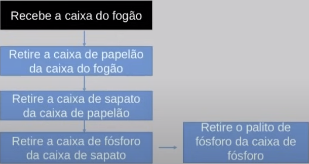
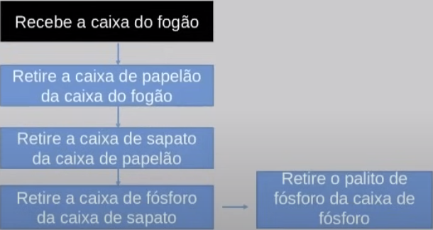

Disciplinas
FUNDAMENTOS DE WEB-T01-2024-1. Concluído
Materiais
Vídeo 1 - Fundamentos de Internet e Web - Introdução às Redes de Computadores sendProf° ministrante: Júlio Cezar Estrela. (UNIVESP)
Conteúdo
Introdução às Redes de Computadores
Roteiro:- Redes de Computadores e suas características.
- Arquitetura em Camadas.
- Modelos de Camadas.
- A Internet.
- Aplicações da Internet.
- Internet e WWW.
Introdução às Redes de Computadores.
Redes de Computadores e suas características.- As redes de computadores foram criadas com o intuito de permitir que:
- Dois ou mais elementos computacionais pudessem se comunicar.
- Para compartilhar recursos
- Áudio, vídeo, imagens, acessar aplicações, para operar máquinas remotamente.
- As redes atuais permitem que centenas de milhares de aplicações possam trocar dados.
- Pessoas com pessoas.
- Pessoas com com empresas.
- Empresas com empresas.
- Dispositivos com outros dispositivos sem a intervenção humana.
- As redes de computadores são formadas por diversos elementos que envolvem inúmeros blocos:
- Usuários e aplicações.
- Roteadores.
- Switches.
- Servidores.
- Meio físico cabeado, meio físico aéreo.
- Links de comunicação.
- Celulares, tablets, desktops.
- Diferentes tecnologias de comunicação.
- Diversos protocolos para garantir que a comunicação ocorra.
- Para um elemento computacional ser conectado a uma rede de dados é preciso:
- Uma placa de rede.
- E que esta placa de rede esteja ligada por algum link a um elemento de comutação.
- É por meio da placa de rede que todos os sinais são transmitidos pelo cabo, ou pelo ar.
- Em seguida, esses sinais são interpretados tanto pelo emissor quanto pelo receptor para que as informações possam ser apresentadas aos usuários das aplicações.
- Denominamos de elemento de comutação, no contexto de uma rede local, aquele que:
- Vai receber dados em algum formato de um emissor, e vai comuta-lo e encaminhar o mesmo para o receptor da informação, estando ele ou não na mesma rede do emissor.
- Ex.:
- Suponha que o emissor A queira enviar um arquivo para o emissor B e que ambos estejam na mesma rede (rede local). O repasse dos dados de forma bastante simplista será feita por um elemento chamado SWITCH
- Se A estiver em uma rede e B estiver em outra, será preciso que o outro elemento denominado Roteador se encarregue de encaminhar os dados /pacotes entre eles.
- Como destacamos anteriormente, diversos são os elementos que compõem uma rede de computadores
- Cada um desses elementos opera/funciona obedecendo regras, para que os usuários/computadores possam se comunicar
- Devido à complexidade envolvida, a concepção de uma rede considera que os dados são transportados utilizando-se de diversas camadas no processo de comunicação
- Vamos abordar um exemplo, que apesar de não ser ligado ao ambiente computacional, servirá de base para você entender como tudo isso funciona
- Suponha os seguintes elementos para organizarmos alguns dados em camadas:
- 1 palito de fósforo
- 1 caixa de fósforo
- 1 caixa de sapato
- 1 caixa de papelão
- 1 caixa de um fogão de 4 bocas
Suponha a sequência do emissor, o qual deseja enviar um palito de fósforo a um receptor:
 Recebimento:

Recebimento:

Internet
|
(Nuvem)
|
+----------|----------+
| |
Roteador 1 Roteador 2
| |
+----+----+ +-----+-----+
| | | |
Dispositivo Dispositivo Dispositivo
(PC) (Laptop) (Smartphone)
Arquitetura em Camadas.
- O que acabamos de discutir anteriormente é a organização da comunicação na forma de camadas
- Os computadores trocam informações obedecendo uma arquitetura em camadas, com cada uma tendo regras/protocolos bem estabelecidos
- Vamos tratar de forma simples de dois tipos de modelos de arquitetura em camadas
- Modelo OSI
- Modelo TCP/IP
Modelo OSI.
- Modelo OSI(Open System Interconnection): é conhecido por ser um modelo de referência, que não foi implementado na prática. Ele possui as camadas descritas a seguir:
- 7. Aplicação.
- 6. Apresentação.
- 5. Sessão.
- 4. Transporte.
- 3. Rede.
- 2. Enlace de dados.
- 1. Física.
Modelo TCP/IP
- Modelo TCP/IP é o padrão de comunicação na maioria das redes, sendo utilizado na prática por inúmeros elementos de comunicação em redes locais ou remotas. Diferentemente do modelo OSI, o TCP/IP possui 4 camadas:
- Aplicação.
- Transporte.
- Internet.
- Acesso à rede.
Funções de cada camada do modelo TCP/IP:
- Aplicação:
- Processo de rede para aplicações.
- Representação das mensagens.
- Formatação das mensagens.
- Transporte:
- Conexão ponto a ponto entre processos que executa em hosts diferentes
- Internet:
- Endereçamento lógico dos hosts.
- Roteamento.
- Acesso à rede:
- Acesso ao meio físico.
- Transmissão binária.
- Codificação/Decodificação de sinais.
A Internet.
O que é?- Pc.
- Servidor.
- Laptop sem fio.
- Celular.
Milhões de dispositivos de computação conectados:
- hospedeiros = sistemas finais.
- Executando aplicações de rede.
- Rede móvel.
- Rede doméstica.
- Rede institucional.
- ISP global.
- ISP regional.
Aplicações da Internet.
- Inúmeras são as aplicações que "rodam" na Internet.
- Serviços de e-mail.
- Serviços de streaming de áudio e vídeo.
- Serviços de compartilhamento de arquivos.
- Serviços e pagamentos on-line.
- Aplicação para acesso seguro a dados sigilosos.
- Algumas das aplicações podem ser executadas fora do que chamamos de Web, ou WWW, pois são anteriores à Web como ela é conhecida hoje.
Referências:
- Redes de Computadores e a Internet. J.F Kurose e K.W. Ross. 5ª e 6ª Edições